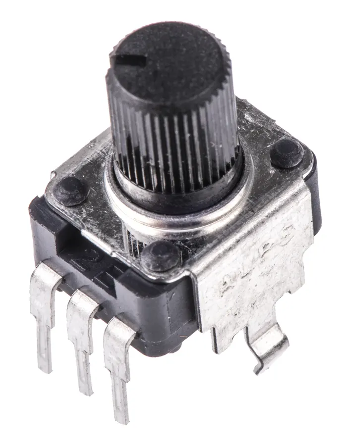
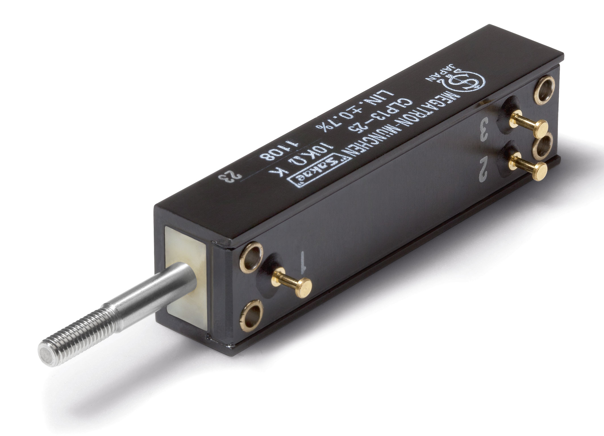
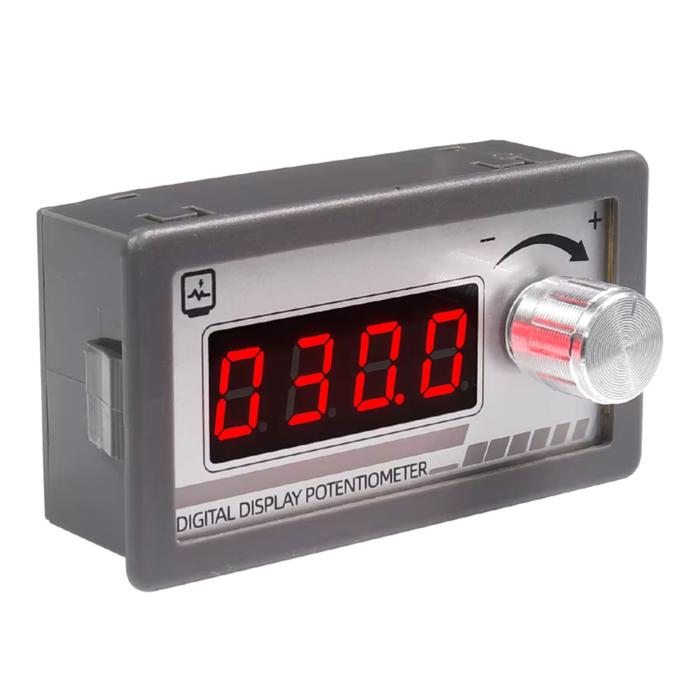
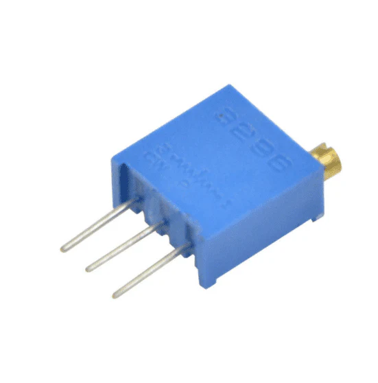
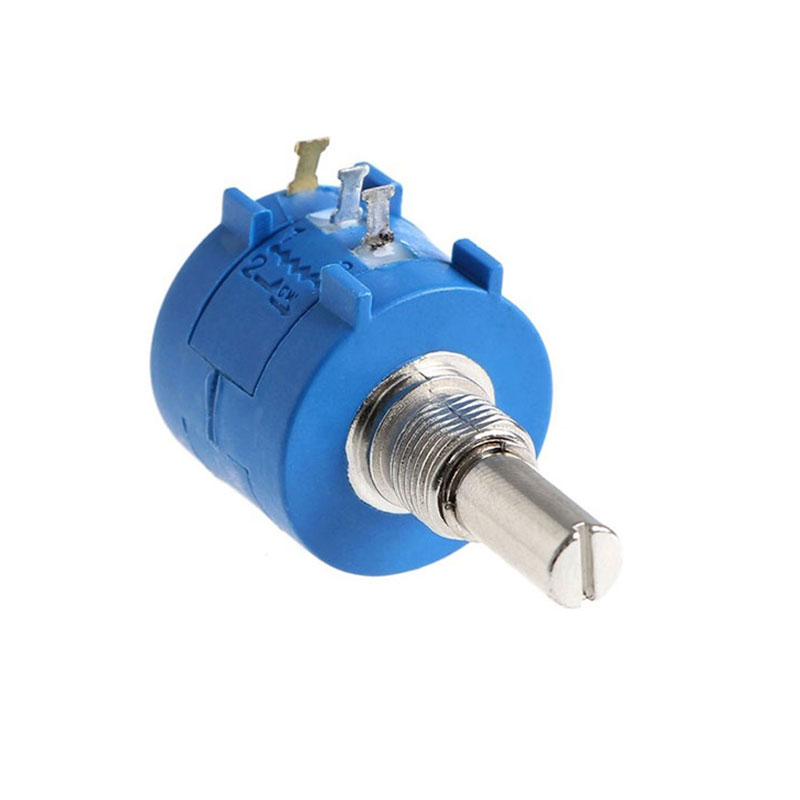

Welcome to ElectroSpecs | Explore Electronics Components | Learn & Build 🚀

ROTARY POTENTIOMETER

LINEAR(SLIDE) POTENTIOMETER

DIGITAL POTENTIOMETER

TRIMMER POTENTIOMETER

MULTI-TURN POTENTIOMETER